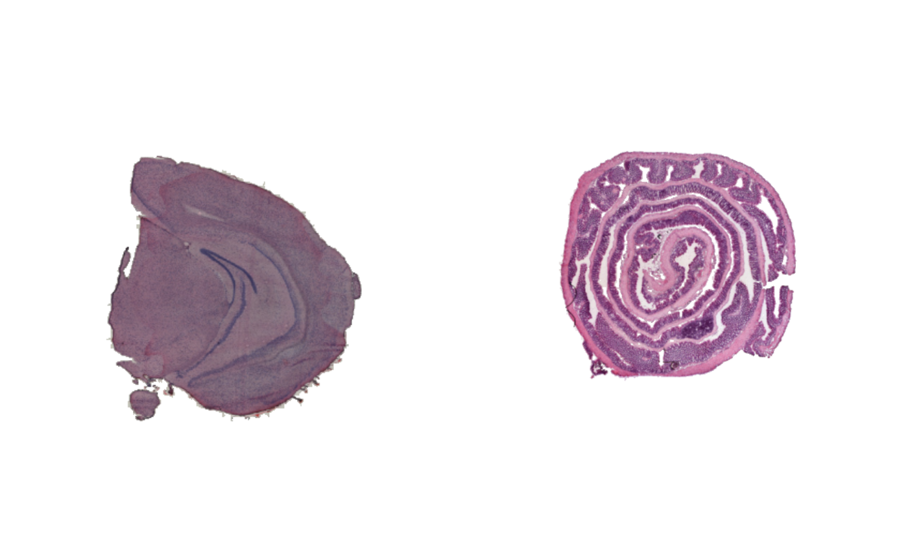

Mask images
Last compiled: 03 March 2025
mask_images.RmdHere we’ll have a quick look at how you can mask H&E images with
semla. Masking means removing the background from the
tissue section and is mostly useful for aesthetic purposes.
Load data
First we need to load some 10x Visium data. here we’ll use a mouse brain tissue dataset and a mouse colon dataset that are shipped with semla.
# Load data
se_mbrain <- readRDS(file = system.file("extdata",
"mousebrain/se_mbrain",
package = "semla"))
se_mbrain$sample_id <- "mousebrain"
se_mcolon <- readRDS(file = system.file("extdata",
"mousecolon/se_mcolon",
package = "semla"))
se_mcolon$sample_id <- "mousecolon"
se_merged <- MergeSTData(se_mbrain, se_mcolon) |>
LoadImages()When we plot the H&E images, we can see that the entire capture area is shown, including the fiducials (the dots that marks the edges of the capture area).
ImagePlot(se_merged)
Mask images
MaskImages makes it possible to remove the
background:
se_merged <- se_merged |>
MaskImages()
ImagePlot(se_merged)
When masking H&E images in a Seurat object created
with semla, the “raw” image is replaced, meaning that plot
functions such as MapFeatures and MapLabels
will now use the masked image instead.
MapFeatures(se_merged, features = c("Th", "Il22ra2"), image_use = "raw",
override_plot_dims = TRUE, colors = RColorBrewer::brewer.pal(n = 9, name = "Spectral") |> rev())
If you want to use the original H&E images, you can simply reload
them with LoadImages.
# Reload images from source files
se_merged <- LoadImages(se_merged)Notes about H&E masking
Masking is not always a trivial task and MaskImages
might fail, in particular when faced with one of the following
issues:
presence of staining artefacts
when using other stains than H&E
presence of bubbles or other types of speckles/dust
tissues with low contrast to background, e.g. adipose tissue
if the image is loaded in high resolution
Custom masking (advanced)
If MaskImages fails, it is possible to mask the images
manually, but this requires some knowledge about image processing. Below
is a simple example of how one can mask the mouse brain tissue section
using the magick R package:
# Fetch H&E rasters
mcolon_rasters <- se_mcolon |> LoadImages() |> GetImages()
# Load image as a magick-image object
image <- image_read(mcolon_rasters[[1]])
# Convert image to CMYK colorspace and extract the magenta channel
im_magenta <- image |>
image_convert(colorspace = "cmyk") |>
image_channel(channel = "Magenta")
# Add blur effect to image and threshold image
im_threshold <- im_magenta |>
image_blur(sigma = 2) |>
image_threshold(type = "black", threshold = "20%") |>
image_threshold(type = "white", threshold = "20%")
# Mask H&E by combining H&E image with mask
mask <- im_threshold |>
image_transparent(color = "black")
im_composite <- image_composite(mask, image)
# Plot images
par(mfrow = c(2, 2), mar = c(0, 0, 0, 0))
image |> as.raster() |> plot()
title("H&E image", line = -2)
im_magenta |> as.raster() |> plot()
title("Magenta color channel", col.main = "white", line = -2)
im_threshold |> as.raster() |> plot()
title("Image mask", col.main = "white", line = -2)
im_composite |> as.raster() |> plot()
title("Masked H&E image", line = -2)
The results are not perfect because there are still a few speckles in the background and some parts of the tissue section are masked. But even a simple approach like this can give decent results!
The processing was done using the R package magick and
with this package you should be able to manipulate images to get pretty
much any result you want. The package vignette is a good resource to get
started: magick
intro
Once you have masked the image, you can convert it back to a
raster object and place it into your Seurat
object. Now we are only working with 1 tissue section, but if you have
multiple tissue sections you need to make sure that the list of
raster objects contains 1 image per sample in the correct
order.
Also, you cannot adjust the dimensions of the image!!! They have to have exactly the same dimensions as the images that you started with otherwise, the spots will no longer be aligned properly.
se_mcolon@tools$Staffli@rasterlists$raw <- list(as.raster(im_composite))
MapFeatures(se_mcolon, features = "nFeature_Spatial", image_use = "raw",
pt_alpha = 0.5, pt_size = 1.5)Package version
-
semla: 1.3.0
Session info
## R version 4.4.0 (2024-04-24)
## Platform: aarch64-apple-darwin20
## Running under: macOS Sonoma 14.5
##
## Matrix products: default
## BLAS: /Library/Frameworks/R.framework/Versions/4.4-arm64/Resources/lib/libRblas.0.dylib
## LAPACK: /Library/Frameworks/R.framework/Versions/4.4-arm64/Resources/lib/libRlapack.dylib; LAPACK version 3.12.0
##
## locale:
## [1] en_US.UTF-8/en_US.UTF-8/en_US.UTF-8/C/en_US.UTF-8/en_US.UTF-8
##
## time zone: Europe/Stockholm
## tzcode source: internal
##
## attached base packages:
## [1] stats graphics grDevices datasets utils methods base
##
## other attached packages:
## [1] magick_2.8.4 semla_1.3.0 ggplot2_3.5.1 dplyr_1.1.4
## [5] SeuratObject_4.1.4 Seurat_4.3.0.1
##
## loaded via a namespace (and not attached):
## [1] RColorBrewer_1.1-3 rstudioapi_0.16.0 jsonlite_1.9.0
## [4] magrittr_2.0.3 spatstat.utils_3.1-2 farver_2.1.2
## [7] rmarkdown_2.29 fs_1.6.5 ragg_1.3.3
## [10] vctrs_0.6.5 ROCR_1.0-11 spatstat.explore_3.3-4
## [13] htmltools_0.5.8.1 forcats_1.0.0 sass_0.4.9
## [16] sctransform_0.4.1 parallelly_1.42.0 KernSmooth_2.23-24
## [19] bslib_0.9.0 htmlwidgets_1.6.4 desc_1.4.3
## [22] ica_1.0-3 plyr_1.8.9 plotly_4.10.4
## [25] zoo_1.8-13 cachem_1.1.0 igraph_2.1.4
## [28] mime_0.12 lifecycle_1.0.4 pkgconfig_2.0.3
## [31] Matrix_1.7-2 R6_2.6.1 fastmap_1.2.0
## [34] fitdistrplus_1.2-2 future_1.34.0 shiny_1.10.0
## [37] digest_0.6.37 colorspace_2.1-1 patchwork_1.3.0
## [40] tensor_1.5 irlba_2.3.5.1 textshaping_0.4.0
## [43] labeling_0.4.3 progressr_0.15.1 spatstat.sparse_3.1-0
## [46] httr_1.4.7 polyclip_1.10-7 abind_1.4-8
## [49] compiler_4.4.0 withr_3.0.2 MASS_7.3-60.2
## [52] tools_4.4.0 lmtest_0.9-40 httpuv_1.6.15
## [55] future.apply_1.11.3 goftest_1.2-3 glue_1.8.0
## [58] dbscan_1.2-0 nlme_3.1-164 promises_1.3.2
## [61] grid_4.4.0 Rtsne_0.17 cluster_2.1.6
## [64] reshape2_1.4.4 generics_0.1.3 gtable_0.3.6
## [67] spatstat.data_3.1-4 tidyr_1.3.1 data.table_1.17.0
## [70] sp_2.2-0 spatstat.geom_3.3-5 RcppAnnoy_0.0.22
## [73] ggrepel_0.9.6 RANN_2.6.2 pillar_1.10.1
## [76] stringr_1.5.1 spam_2.11-1 later_1.4.1
## [79] splines_4.4.0 lattice_0.22-6 renv_1.0.2
## [82] survival_3.6-4 deldir_2.0-4 tidyselect_1.2.1
## [85] miniUI_0.1.1.1 pbapply_1.7-2 knitr_1.49
## [88] gridExtra_2.3 scattermore_1.2 xfun_0.51
## [91] matrixStats_1.5.0 stringi_1.8.4 lazyeval_0.2.2
## [94] yaml_2.3.10 evaluate_1.0.3 codetools_0.2-20
## [97] tibble_3.2.1 BiocManager_1.30.25 cli_3.6.4
## [100] uwot_0.2.3 xtable_1.8-4 reticulate_1.41.0
## [103] systemfonts_1.1.0 munsell_0.5.1 jquerylib_0.1.4
## [106] Rcpp_1.0.14 globals_0.16.3 spatstat.random_3.3-2
## [109] zeallot_0.1.0 png_0.1-8 spatstat.univar_3.1-1
## [112] parallel_4.4.0 pkgdown_2.1.0 dotCall64_1.2
## [115] listenv_0.9.1 viridisLite_0.4.2 scales_1.3.0
## [118] ggridges_0.5.6 leiden_0.4.3.1 purrr_1.0.4
## [121] rlang_1.1.5 cowplot_1.1.3 shinyjs_2.1.0